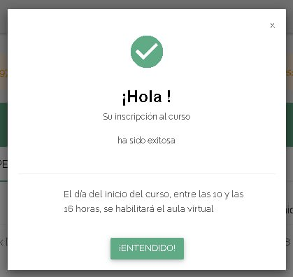

Aunque la gente creo que acostumbra más a ir a cursadas en línea, se podría llegar a investigar más a fondo.
De la E-Learning de la UTN tengo un buen recuerdo del nivel educativo que se maneja ahi, y la practicidad económica de Coderhouse, comparado con el nivel en la atención, también estaba buena.
mar, 25 abr, 09:38: Yo: Buenas. Les escribo para consultarles acerca del pago de mi curso. Yo tengo la misma dirección e-mail, y nombre que acá, y me dispongo a estudiar para profesional Full Stack Development, el próximo 28 de abril. Resulta ser que el anterior domingo, tuvimos intención de realizar el pago, pero no me pidieron un formulario para la tarjeta. Esperé al Lunes, sea cosa de que fuera algún tema bancario, y el proceso se ejecutó, pero no se registró ningún gasto en tarjeta. Espero ansioso su respuesta, ya que en 3 días vence el plazo para pagar. Saludos cordiales.
25 abr 2023, 12:25: Informes: Estimado/a No verificamos el pago acreditado y necesitamos un comprobante de pago/de transacción confirmada o movimiento de tarjeta/número de operación a través de Mercado pago o su banco emisor comunicándose con el mismo o por medio de su Homebanking. Algo que certifique que efectivamente se realizó el pago con el fin de derivar a Administración Saludos Cordiales Gustavo Gonzalez Departamento de Informes
26 abr 2023, 15:20: Yo: Buenas. Antes que nada, muchísimas gracias por la prontitud. Mi problema al respecto del pago, es que toda la operación de compra se lleva a cabo a la perfección, pero a la salida, no estoy recibiendo actividad en la tarjeta, tampoco un comprobante de pago, y no quedé inscripto tampoco.
26 abr 2023, 15:45: Yo: La única respuesta que estoy recibiendo al efectuar el pago, es este cartel adjunto al final. Luego del plazo del tiempo transcurrido, el curso figura como "Cuota por vencer". 
27 abr 2023, 13:33: Informes: Estimada/o, Le informamos que lo hemos derivado al Departamento de Administración: administracion@centrodeelearning.com a la brevedad se estarán contactando con usted. Saludos cordiales, Gustavo Gonzalez Departamento de Informes
vie, 28 abr, 16:56: Yo: (Mensaje a administración) Buenas, antes que nada, les agradecería una pronta respuesta, y solución. La asistencia de La plataforma de E-learning me estaba diciendo que hablara con el departamento de informes, al cuál le estuve explicando mi inconveniente, y me dijeron "... lo hemos derivado al Departameto de Administración". No se si están enterados de mi caso, pero se los explico. El pasado Domingo 23 de Abril, empecé sin éxito a pagar la cuota inicial de lo que es el curso Desarrollador Web Full Stack. la operación se efectuaba exitosamente, devolviendo un cartel como se muestra en la imagen adjunta, pero no se registraba actividad bancaria, un comprobante, o una señal de relevancia en la plataforma. Tal y como describo, hago la operación al completo, pero al ejecutar la orden de pago, nada sucede, y es a día de hoy que sigue mostrando dicho cartel, y pasadas las 16 horas de cada caso, no hay absolutamente ningún movimiento, y en la plataforma figura como "Cuota por vencer", destacando que también hoy figura exactamente igual. Insisto, les agradezco una pronta respuesta, ya que me estoy perdiendo del comienzo de la cursada. Buen fin de semana. (La foto adjunta, es la misma de antes)
mar, 2 may, 11:01: Informes: Estimada/o, Le informamos que lo hemos derivado al Departamento de Administración: administracion@centrodeelearning.com a la brevedad se estarán contactando con usted. Saludos cordiales, Jesica Maldonado Departamento de Informes
2 may 2023, 12:21: Administración: Estimado, Le informamos que hemos verificado y observamos que el pago figura rechazado, le solicitamos vuelva ingresarlo. Recuerde que puede utilizar Mercado pago. Quedo pendiente cualquier inquietud que surja. Saludos cordiales Nuria Rios Departamento de Administración